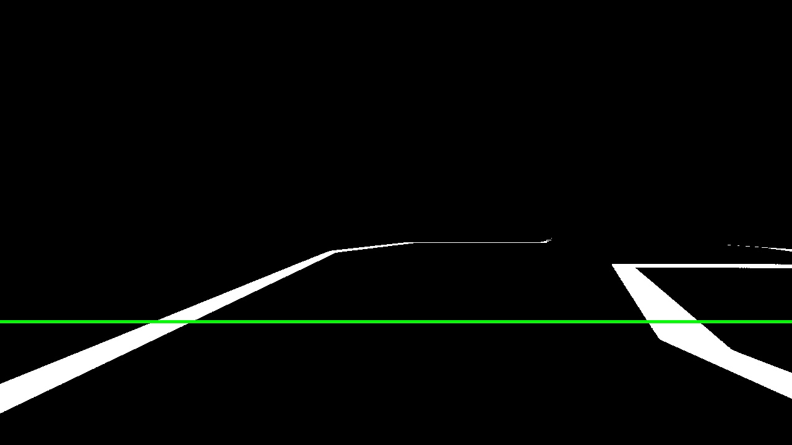
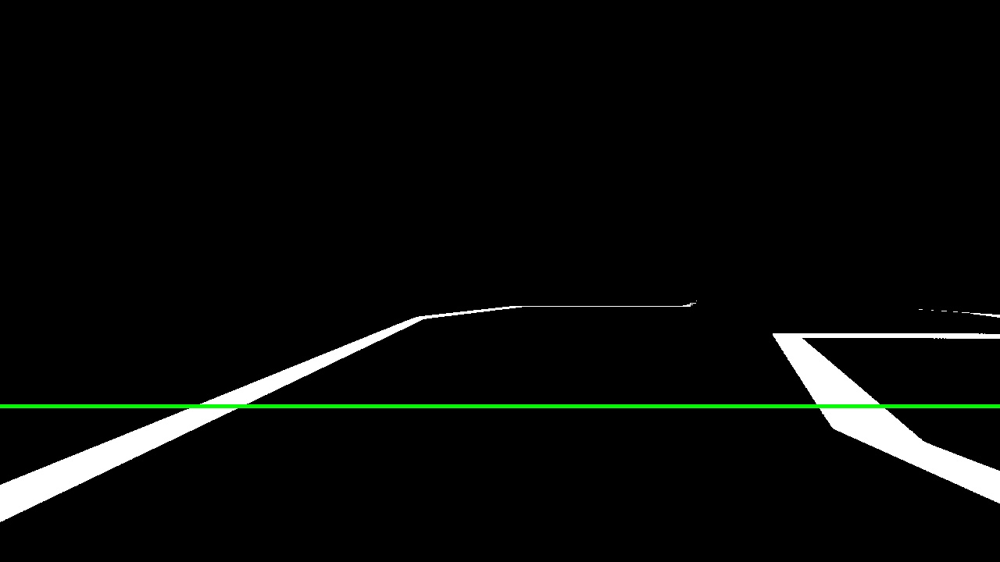
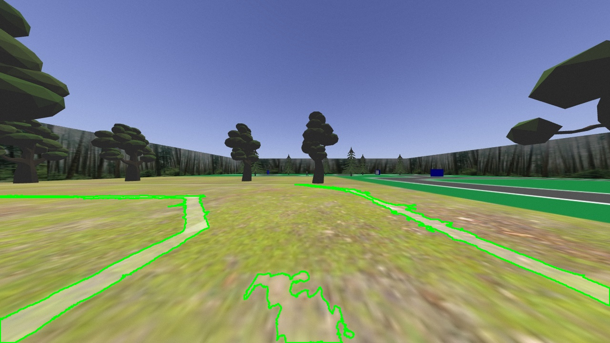
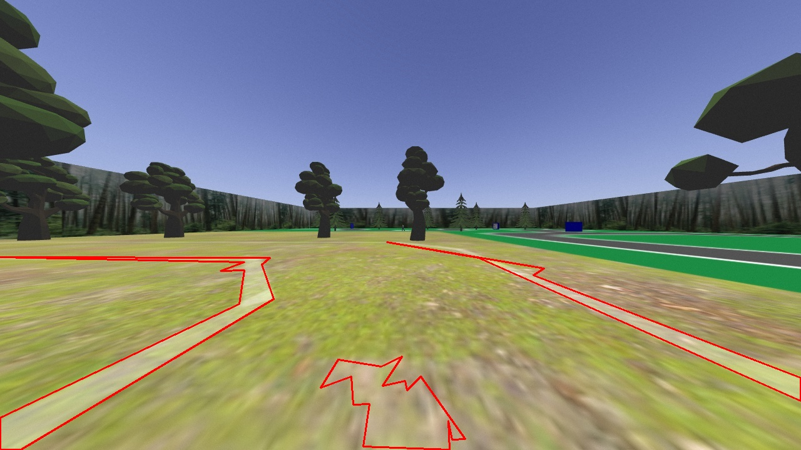

detective_robot/
> cat description.txt
A robot programmed to navigate a virtual obstacle course and solve a crime
> open road_pid*.gif
 


threshold for white road lines
> open desert_pid*.gif



threshold for white road lines
> open sign_crop*.gif

threshold for the sign in two ways, logical AND the results
> open demo*.gif
watch the demo video below for more!
> ls links/
demo_video.mp4 source_code.github
> cat project.rpt
This project was a deep dive into computer vision and control systems, along with some machine learning.
To be completed...